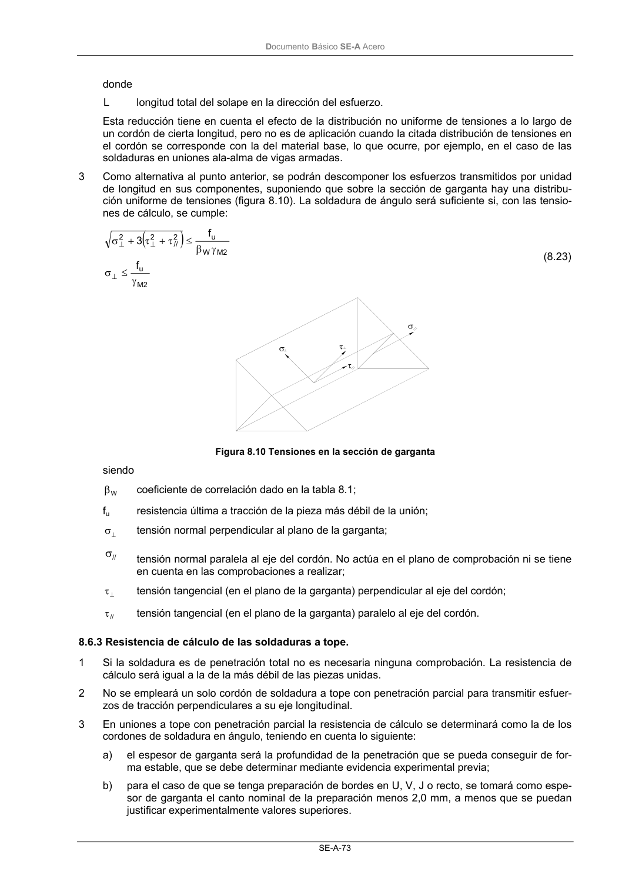

DB-SE-A Acero · edición 2007-10-23 · capa oficial
Documento DB-SE-A-oficial · SHA-256 del PDF 9ed9ea694aabfbda3bfbbef40dfe9223fde05d13c35bc2ba9751e5a96a22a64f
Copia fiel del PDF fuente · Fuente oficial
Ficha de la disposición en la fuente oficial
Formatos: JSON del segmento · Markdown
( ) ) 2 M u 2 M W u 2 // 2 2 f f 3 γ ≤ σ γ β ≤ τ + τ + σ ⊥ ⊥ ⊥ (8.23) Figura 8.10 Tensiones en la sección de garganta siendo W β coeficiente de correlación dado en la tabla 8.1; fu resistencia última a tracción de la pieza más débil de la unión; ⊥ σ tensión normal perpendicular al plano de la garganta; // σ tensión normal paralela al eje del cordón. No actúa en el plano de comprobación ni se tiene en cuenta en las comprobaciones a realizar; ⊥ τ tensión tangencial (en el plano de la garganta) perpendicular al eje del cordón; // τ tensión tangencial (en el plano de la garganta) paralelo al eje del cordón. 8.6.3 Resistencia de cálculo de las soldaduras a tope. 1 Si la soldadura es de penetración total no es necesaria ninguna comprobación. La resistencia de cálculo será igual a la de la más débil de las piezas unidas. 2 No se empleará un solo cordón de soldadura a tope con penetración parcial para transmitir esfuer- zos de tracción perpendiculares a su eje longitudinal. 3 En uniones a tope con penetración parcial la resistencia de cálculo se determinará como la de los cordones de soldadura en ángulo, teniendo en cuenta lo siguiente: a) el espesor de garganta será la profundidad de la penetración que se pueda conseguir de for- ma estable, que se debe determinar mediante evidencia experimental previa; b) para el caso de que se tenga preparación de bordes en U, V, J o recto, se tomará como espe- sor de garganta el canto nominal de la preparación menos 2,0 mm, a menos que se puedan justificar experimentalmente valores superiores. DocumentoBásico SE-A Acero SE-A-74 4 Si la soldadura es en T se comprobará como una soldadura a tope con penetración total si (figura 8.11): mm 3 c 5 t c t a a nom nom 2 , nom 1, nom ≤ ≤ ≥ + (8.24) En otro caso se comprobará como una soldadura en ángulo o en ángulo con penetración si se cumplen las condiciones correspondientes. 5 En perfiles en L o en U unidos por una sola cara, se debe tener en cuenta la excentricidad, o alter- nativamente, considerar como sección del perfil el área concéntrica con la resistencia de la unión. 6 Uniones híbridas. En uniones a cortante con distinto tipo de tornillo o formadas por cordones de soldadura y tornillos, cada uno de estos grupos se dimensionará para transmitir la carga total. Sin embargo, se podrán considerar trabajando conjuntamente con la soldadura, los tornillos de alta re- sistencia diseñados para trabajar sin deslizamiento en estado límite último. En este caso, el apriete final de los tornillos se efectuará una vez realizadas las soldaduras. Figura 8.11 Soldadura a tope en T
